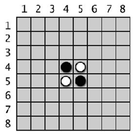
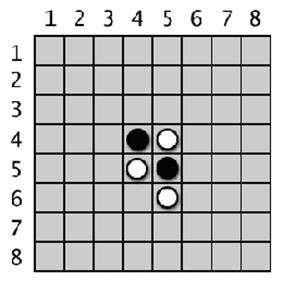
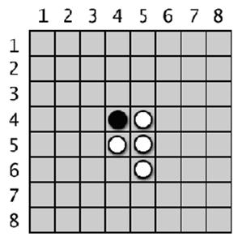
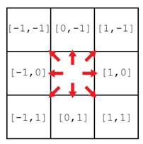

|
|
Capítulo 15 |
Reversi |

Topics Covered In This Chapter:
· La Función bool()
· Cómo Jugar a Reversi
En este capítulo, crearemos un juego llamado Reversi (también llamado Othello). Reversi es un juego de mesa que se juega sobre una grilla, de modo que tendremos que usar un sistema de coordenadas Cartesiano con coordenadas XY. Es un juego para dos jugadores. En nuestra versión del juego la computadora tendrá una IA más avanzada que la que hemos creado para el Ta Te Ti. De hecho, esta IA es tan buena que probablemente te gane todas las partidas que juegues. (¡Al menos yo pierdo cada vez que juego contra ella!)
Reversi tiene un tablero de 8 x 8 y baldosas que son negras de un lado y blancas del otro (nuestro juego las reemplazará por O's y X's). El tablero inicial se ve como la Figura 15-1. El jugador negro y el jugador blanco toman turnos para colocar una nueva baldosa de su color. Cualquier baldosa del oponente que se encuentre entre la nueva baldosa y las otras baldosas de ese color es convertida. El objetivo del juego es tener tantas baldosas de tu color como sea posible. Por ejemplo, la Figura 15-2 es como se vería si el jugador blanco colocara una nueva baldosa blanca en el espacio 5, 6.
|
 |
 |
|
Figura 15-1: El tablero inicial en Reversi tiene dos baldosas blancas y dos negras. |
Figura 15-2: El jugador blanco coloca una nueva baldosa. |
Las baldosas en todas las direcciones son convertidas en tanto se encuentren entre la nueva baldosa del jugador y sus baldosas existentes. En la Figura 15-5, el jugador blanco coloca una baldosa en 3, 6 y convierte baldosas en ambas direcciones (indicadas por las líneas). El resultado se muestra en la Figura 15-6.
|
 |
|
|
Figura 15-3: La movida del jugador blanco convierte una de las baldosas negras. |
Figura 15-4: El jugador negro coloca una nueva baldosa, la cual convierte una de las baldosas blancas. |

Las baldosas en todas las direcciones son convertidas en tanto se encuentren entre la nueva baldosa del jugador y sus baldosas existentes. En la Figura 15-5, el jugador blanco coloca una baldosa en 3, 6 y convierte baldosas en ambas direcciones (indicadas por las líneas). El resultado se muestra en la Figura 15-6.
|
|
|
|
Figura 15-5: La segunda movida del jugador blanco en 3, 6 convertirá dos baldosas negras. |
Figura 15-6: El tablero luego de la segunda movida del jugador blanco. |


Cada jugador puede rápidamente convertir muchas baldosas en el tablero en uno o dos movimientos. Los jugadores deben hacer siempre jugadas que capturen al menos una baldosa. El juego termina cuando ningún jugador puede seguir moviendo, o el tablero está completamente lleno. Gana el jugador con más baldosas de su color.
La IA que crearemos para este juego simplemente intentará jugar en las esquinas. Si no es posible jugar en una esquina, la computadora seleccionará la jugada que convierta más baldosas.
Prueba de Ejecución de Reversi
¡Bienvenido a Reversi!
¿Deseas ser X ó O?
x
El jugador comenzará.
1 2 3 4 5 6 7 8
+---+---+---+---+---+---+---+---+
| | | | | | | | |
1 | | | | | | | | |
| | | | | | | | |
+---+---+---+---+---+---+---+---+
| | | | | | | | |
2 | | | | | | | | |
| | | | | | | | |
+---+---+---+---+---+---+---+---+
| | | | | | | | |
3 | | | | | | | | |
| | | | | | | | |
+---+---+---+---+---+---+---+---+
| | | | | | | | |
4 | | | | X | O | | | |
| | | | | | | | |
+---+---+---+---+---+---+---+---+
| | | | | | | | |
5 | | | | O | X | | | |
| | | | | | | | |
+---+---+---+---+---+---+---+---+
| | | | | | | | |
6 | | | | | | | | |
| | | | | | | | |
+---+---+---+---+---+---+---+---+
| | | | | | | | |
7 | | | | | | | | |
| | | | | | | | |
+---+---+---+---+---+---+---+---+
| | | | | | | | |
8 | | | | | | | | |
| | | | | | | | |
+---+---+---+---+---+---+---+---+
Tienes 2 puntos. La computadora tiene 2 puntos.
Ingresa tu jugada, salir para terminar el juego, o pistas para activar/desactivar las pistas.
53
1 2 3 4 5 6 7 8
+---+---+---+---+---+---+---+---+
| | | | | | | | |
1 | | | | | | | | |
| | | | | | | | |
+---+---+---+---+---+---+---+---+
| | | | | | | | |
2 | | | | | | | | |
| | | | | | | | |
+---+---+---+---+---+---+---+---+
| | | | | | | | |
3 | | | | | X | | | |
| | | | | | | | |
+---+---+---+---+---+---+---+---+
| | | | | | | | |
4 | | | | X | X | | | |
| | | | | | | | |
+---+---+---+---+---+---+---+---+
| | | | | | | | |
5 | | | | O | X | | | |
| | | | | | | | |
+---+---+---+---+---+---+---+---+
| | | | | | | | |
6 | | | | | | | | |
| | | | | | | | |
+---+---+---+---+---+---+---+---+
| | | | | | | | |
7 | | | | | | | | |
| | | | | | | | |
+---+---+---+---+---+---+---+---+
| | | | | | | | |
8 | | | | | | | | |
| | | | | | | | |
+---+---+---+---+---+---+---+---+
Tienes 4 puntos. La computadora tiene 1 puntos.
Presiona enter para ver la jugada de la computadora.
...omitido por brevedad...
1 2 3 4 5 6 7 8
+---+---+---+---+---+---+---+---+
| | | | | | | | |
1 | O | O | O | O | O | O | O | O |
| | | | | | | | |
+---+---+---+---+---+---+---+---+
| | | | | | | | |
2 | O | O | O | O | O | O | O | O |
| | | | | | | | |
+---+---+---+---+---+---+---+---+
| | | | | | | | |
3 | O | O | O | O | O | O | O | O |
| | | | | | | | |
+---+---+---+---+---+---+---+---+
| | | | | | | | |
4 | O | O | X | O | O | O | O | O |
| | | | | | | | |
+---+---+---+---+---+---+---+---+
| | | | | | | | |
5 | O | O | O | X | O | X | O | X |
| | | | | | | | |
+---+---+---+---+---+---+---+---+
| | | | | | | | |
6 | O | X | O | X | X | O | O | |
| | | | | | | | |
+---+---+---+---+---+---+---+---+
| | | | | | | | |
7 | O | X | X | O | O | O | O | O |
| | | | | | | | |
+---+---+---+---+---+---+---+---+
| | | | | | | | |
8 | O | X | X | O | | | X | |
| | | | | | | | |
+---+---+---+---+---+---+---+---+
Tienes 12 puntos. La computadora tiene 48 puntos.
Ingresa tu jugada, salir para terminar el juego, o pistas para activar/desactivar las pistas.
86
X ha obtenido 15 puntos. O ha obtenido 46 puntos.
Has perdido. La computadora te ha vencido por 31 puntos.
¿Quieres jugar de nuevo? (sí o no)
no
Como puedes ver, la IA hizo un buen trabajo y me venció 46 a 15. Para ayudar al jugador, programaremos el juego de modo que ofrezca pistas. Si el jugador escribe 'pistas' como su jugada, se activarán o desactivarán las pistas. Cuando el modo pistas está activado, se verán marcas '.' en el tablero para todas las jugadas posibles, como se muestra a continuación:
1 2 3 4 5 6 7 8
+---+---+---+---+---+---+---+---+
| | | | | | | | |
1 | | | | | | | | |
| | | | | | | | |
+---+---+---+---+---+---+---+---+
| | | | | | | | |
2 | | | | . | | . | | |
| | | | | | | | |
+---+---+---+---+---+---+---+---+
| | | | | | | | |
3 | | | | O | O | O | | |
| | | | | | | | |
+---+---+---+---+---+---+---+---+
| | | | | | | | |
4 | | | . | O | O | X | | |
| | | | | | | | |
+---+---+---+---+---+---+---+---+
| | | | | | | | |
5 | | | . | O | O | O | X | |
| | | | | | | | |
+---+---+---+---+---+---+---+---+
| | | | | | | | |
6 | | | | . | | . | | |
| | | | | | | | |
+---+---+---+---+---+---+---+---+
| | | | | | | | |
7 | | | | | | | | |
| | | | | | | | |
+---+---+---+---+---+---+---+---+
| | | | | | | | |
8 | | | | | | | | |
| | | | | | | | |
+---+---+---+---+---+---+---+---+
Código Fuente de Reversi
Reversi es un programa mamut comparado con nuestros juegos anteriores. ¡Tiene más de 300 líneas! Pero no te preocupes, muchas de estas líneas son comentarios o líneas en blanco para separar el código y hacerlo más legible.
Como hemos hecho con los otros programas, primero crearemos varias funciones para llevar a cabo tareas relacionadas con Reversi que serán llamadas por la sección principal. Aproximadamente las primeras 250 líneas de código son para estas funciones auxiliares, y las últimas 50 líneas de código implementan el juego Reversi en sí.
Si obtienes errores luego de escribir este código, compara el código que has escrito con el código del libro usando la herramienta diff online en http://invpy.com/es/diff/reversi.
reversi.py
1. # Reversi
2.
3. import random
4. import sys
5.
6. def dibujarTablero(tablero):
7. # Esta funcion dibuja el tablero recibido. Devuelve None.
8. LÍNEAH = ' +---+---+---+---+---+---+---+---+'
9. LÍNEAV = ' | | | | | | | | |'
10.
11. print(' 1 2 3 4 5 6 7 8')
12. print(LÍNEAH)
13. for y in range(8):
14. print(LÍNEAV)
15. print(y+1, end=' ')
16. for x in range(8):
17. print('| %s' % (reiniciarTablero[x][y]), end=' ')
18. print('|')
19. print(LÍNEAV)
20. print(LÍNEAH)
21.
22.
23. def reiniciarTablero(tablero):
24. # Deja en blanco el tablero recibido como argumento, excepto la posición inicial.
25. for x in range(8):
26. for y in range(8):
27. tablero[x][y] = ' '
28.
29. # Piezas iniciales:
30. tablero[3][3] = 'X'
31. tablero[3][4] = 'O'
32. tablero[4][3] = 'O'
33. tablero[4][4] = 'X'
34.
35.
36. def obtenerNuevoTablero():
37. # Crea un tablero nuevo, vacío.
38. tablero= []
39. for i in range(8):
40. tablero.append([' '] * 8)
41.
42. return tablero
43.
44.
45. def esJugadaVálida(tablero, baldosa, comienzox, comienzoy):
46. # Devuelve False si la jugada del jugador en comienzox, comienzoy es invalida
47. # Si es una jugada válida, devuelve una lista de espacios que pasarían a ser del jugador si moviera aquí.
48. if tablero[comienzox][comienzoy] != ' ' or not estáEnTablero(comienzox, comienzoy):
49. return False
50.
51. tablero[comienzox][comienzoy] = baldosa # coloca temporariamente la baldosa sobre el tablero.
52.
53. if baldosa == 'X':
54. otraBaldosa = 'O'
55. else:
56. otraBaldosa = 'X'
57.
58. baldosasAConvertir = []
59. for direcciónx, direccióny in [[0, 1], [1, 1], [1, 0], [1, -1], [0, -1], [-1, -1], [-1, 0], [-1, 1]]:
60. x, y = comienzox, comienzoy
61. x += direcciónx # primer paso en la dirección
62. y += direccióny # primer paso en la dirección
63. if estáEnTablero(x, y) and tablero[x][y] == otraBaldosa:
64. # Hay una pieza perteneciente al otro jugador al lado de nustra pieza
65. x += direcciónx
66. y += direccióny
67. if not estáEnTablero(x, y):
68. continue
69. while tablero[x][y] == otraBaldosa:
70. x += direcciónx
71. y += direccióny
72. if not estáEnTablero(x, y): # sale del bucle while y continua en el bucle for.
73. break
74. if not estáEnTablero(x, y):
75. continue
76. if tablero[x][y] == baldosa:
77. # Hay fichas a convertir. Caminar en dirección opuesta hasta llegar al casillero original, registrando todas las posiciones en el camino.
78. while True:
79. x -= direcciónx
80. y -= direccióny
81. if x == direcciónxand y == direccióny:
82. break
83. baldosasAConvertir.append([x, y])
84.
85. tablero[comienzox][comienzoy] = ' ' # restablecer el espacio vacío
86. if len(baldosasAConvertir) == 0: # Si no se convirtió ninguna baldosa, la jugada no es válida.
87. return False
88. return baldosasAConvertir
89.
90.
91. def estáEnTablero(x, y):
92. # Devuelve True si las coordenadas se encuentran dentro del tablero
93. return x >= 0 and x <= 7 and y >= 0 and y <= 7
94.
95.
96. def obtenerTableroConJugadasVálidas(tablero, baldosa):
97. # Devuelve un nuevo tablero, marcando con "." las jugadas válidas que el jugador puede realizar.
98. réplicaTablero = obtenerCopiaTablero(tablero)
99.
100. for x, y in obtenerJugadasVálidas(réplicaTablero, baldosa):
101. réplicaTablero[x][y] = '.'
102. return réplicaTablero
103.
104.
105. def obtenerJugadasVálidas(tablero, baldosa):
106. # Devuelve una lista de listas [x,y] de jugadas válidas para el jugador en el tablero dado.
107. jugadasVálidas = []
108.
109. for x in range(8):
110. for y in range(8):
111. if esJugadaVálida(tablero, baldosa, x, y) != False:
112. jugadasVálidas.append([x, y])
113. return jugadasVálidas
114.
115.
116. def obtenerPuntajeTablero(tablero):
117. # Determina el puntaje contando las piezas. Devuelve un diccionario con claves 'X' y 'O'.
118. puntajex = 0
119. puntajeo = 0
120. for x in range(8):
121. for y in range(8):
122. if tablero[x][y] == 'X':
123. puntajex += 1
124. if tablero[x][y] == 'O':
125. puntajeo += 1
126. return {'X':puntajex, 'O':puntajeo}
127.
128.
129. def ingresarBaldosaJugador():
130. # Permite al jugador elegir que baldosa desea ser.
131. # Devuelve una lista con la baldosa del jugador como primer elemento y el de la computadora como segundo.
132. baldosa = ''
133. while not (baldosa == 'X' or baldosa == 'O'):
134. print('¿Deseas ser X ó O?')
135. baldosa = input().upper()
136.
137. # El primer elemento en la lista es la baldosa del juegador, el segundo es la de la computadora.
138. if baldosa == 'X':
139. return ['X', 'O']
140. else:
141. return ['O', 'X']
142.
143.
144. def quiénComienza():
145. # Elije al azar qué jugador comienza.
146. if random.randint(0, 1) == 0:
147. return 'La computadora'
148. else:
149. return 'El jugador'
150.
151.
152. def jugarDeNuevo():
153. # Esta función devuelve True si el jugador quiere jugar de nuevo, de lo contrario devuelve False.
154. print('¿Quieres jugar de nuevo? (sí o no)')
155. return input().lower().startswith('s')
156.
157.
158. def hacerJugada(tablero, baldosa, comienzox, comienzoy):
159. # Coloca la baldosa sobre el tablero en comienzox, comienzoy, y convierte cualquier baldosa del oponente.
160. # Devuelve False si la jugada es inválida, True si es válida.
161. baldosasAConvertir = esJugadaVálida(tablero, baldosa, comienzox, comienzoy)
162.
163. if baldosasAConvertir == False:
164. return False
165.
166. tablero[comienzox][comienzoy] = baldosa
167. for x, y in baldosasAConvertir:
168. tablero[x][y] = baldosa
169. return True
170.
171.
172. def obtenerCopiaTablero(tablero):
173. # Duplica la lista del tablero y devuelve el duplicado.
174. réplicaTablero = obtenerNuevoTablero()
175.
176. for x in range(8):
177. for y in range(8):
178. réplicaTablero[x][y] = tablero[x][y]
179.
180. return réplicaTablero
181.
182.
183. def esEsquina(x, y):
184. # Devuelve True si la posicion es una de las esquinas.
185. return (x == 0 and y == 0) or (x == 7 and y == 0) or (x == 0 and y == 7) or (x == 7 and y == 7)
186.
187.
188. def obtenerJugadaJugador(tablero, baldosaJugador):
189. # Permite al jugador tipear su jugada.
190. # Devuelve la jugada como [x, y] (o devuelve las cadenas 'pistas' o 'salir')
191. CIFRAS1A8 = '1 2 3 4 5 6 7 8'.split()
192. while True:
193. print('Ingresa tu jugada, salir para terminar el juego, o pistas para activar/desactivar las pistas.')
194. jugada = input().lower()
195. if jugada == 'salir':
196. return 'salir'
197. if jugada == 'pistas':
198. return 'pistas'
199.
200. if len(jugada) == 2 and jugada[0] in CIFRAS1A8 and jugada[1] in CIFRAS1A8:
201. x = int(jugada[0]) - 1
202. y = int(jugada[1]) - 1
203. if esJugadaVálida(tablero, baldosaJugador, x, y) == False:
204. continue
205. else:
206. break
207. else:
208. print('Esta no es una jugada válida. Ingresa la coordenada x (1-8), luego la coordenada y (1-8).')
209. print('Por ejemplo, 81 corresponde a la esquina superior derecha.')
210.
211. return [x, y]
212.
213.
214. def obtenerJugadaComputadora(tablero, baldosaComputadora):
215. # Dado un tablero y la baldosa de la computadora, determinar dónde
216. # jugar y devolver esa jugada como una lista [x, y].
217. jugadasPosibles = obtenerJugadasVálidas(tablero, baldosaComputadora)
218.
219. # ordena al azar el orden de las jugadas posibles
220. random.shuffle(jugadasPosibles)
221.
222. # siempre jugar en una esquina si está disponible.
223. for x, y in jugadasPosibles:
224. if esEsquina(x, y):
225. return [x, y]
226.
227. # Recorrer la lista de jugadas posibles y recordar la que da el mejor puntaje
228. mejorPuntaje = -1
229. for x, y in jugadasPosibles:
230. réplicaTablero = obtenerCopiaTablero(tablero)
231. hacerJugada(réplicaTablero, baldosaComputadora, x, y)
232. puntaje = obtenerPuntajeTablero(réplicaTablero)[baldosaComputadora]
233. if puntaje > mejorPuntaje:
234. mejorJugada = [x, y]
235. mejorPuntaje = puntaje
236. return mejorJugada
237.
238.
239. def mostrarPuntajes(baldosaJugador, baldosaComputadora):
240. # Imprime el puntaje actual.
241. puntajes = obtenerPuntajeTablero(tableroPrincipal)
242. print('Tienes %s puntos. La computadora tiene %s puntos.' % (puntajes[baldosaJugador], puntajes[baldosaComputadora]))
243.
244.
245.
246. print('¡Bienvenido a Reversi!')
247.
248. while True:
249. # Reiniciar el tablero y la partida.
250. tableroPrincipal = obtenerNuevoTablero()
251. reiniciarTablero(tableroPrincipal)
252. baldosaJugador, baldosaComputadora = ingresarBaldosaJugador()
253. mostrarPistas = False
254. turno = quiénComienza()
255. print(turno + ' comenzará.')
256.
257. while True:
258. if turno == 'El jugador':
259. # Turno del jugador
260. if mostrarPistas:
261. tableroConJugadasVálidas = obtenerTableroConJugadasVálidas(tableroPrincipal, baldosaJugador)
262. dibujarTablero(tableroConJugadasVálidas)
263. else:
264. dibujarTablero(tableroPrincipal)
265. mostrarPuntajes(baldosaJugador, baldosaComputadora)
266. jugada = obtenerJugadaJugador(tableroPrincipal, baldosaJugador)
267. if jugada == 'salir':
268. print('¡Gracias por jugar!')
269. sys.exit() # terminar el programa
270. elif jugada == 'pistas':
271. mostrarPistas = not mostrarPistas
272. continue
273. else:
274. hacerJugada(tableroPrincipal, baldosaJugador, jugada[0], jugada[1])
275.
276. if obtenerJugadasVálidas(tableroPrincipal, baldosaComputadora) == []:
277. break
278. else:
279. turn = 'La computadora'
280.
281. else:
282. # Turno de la computadora
283. dibujarTablero(tableroPrincipal)
284. mostrarPuntajes(baldosaJugador, baldosaComputadora)
285. input('Presiona enter para ver la jugada de la computadora.')
286. x, y = obtenerJugadaComputadora(tableroPrincipal, baldosaComputadora)
287. hacerJugada(tableroPrincipal, baldosaComputadora, x, y)
288.
289. if obtenerJugadasVálidas(tableroPrincipal, baldosaJugador) == []:
290. break
291. else:
292. turno = 'El jugador'
293.
294. # Mostrar el puntaje final.
295. dibujarTablero(tableroPrincipal)
296. puntajes = obtenerPuntajeTablero(tableroPrincipal)
297. print('X ha obtenido %s puntos. O ha obtenido %s puntos.' % (puntajes['X'], puntajes['O']))
298. if puntajes[baldosaJugador] > puntajes[baldosaComputadora]:
299. print('¡Has vencido a la computadora por %s puntos! ¡Felicitaciones!' % (puntajes[baldosaJugador] - puntajes[baldosaComputadora]))
300. elif puntajes[baldosaJugador] < puntajes[baldosaComputadora]:
301. print('Has perdido. La computadora te ha vencido por %s puntos.' % (puntajes[baldosaComputadora] - puntajes[baldosaJugador]))
302. else:
303. print('¡Ha sido un empate!')
304.
305. if not jugarDeNuevo():
306. break
Cómo Funciona el Código
La Estructura de Datos del Tablero de Juego
Antes de meternos en el código, entendamos la estructura de datos del tablero. Esta estructura de datos es una lista de listas, igual que la de nuestro juego anterior Sonar. La lista de listas se crea para que tablero[x][y] represente al caracter en la posición x sobre el eje X (de izquierda a derecha) y la posición y sobre el eje Y (de arriba hacia abajo).
Este caracter puede ser un espacio ' ' en blanco (para representar un casillero vacío), un punto '.' (para representar una jugada posible en el modo de pistas), o un caracter 'X' o 'O' (para representar las baldosas de los jugadores). Cada vez que veas un parámetro llamado tablero, se tratará de esta especie de lista de listas.
Importando Otros Módulos
1. # Reversi
2. import random
3. import sys
La línea 2 importa el módulo random para usar sus funciones randint() y choice(). La línea 3 importa el módulo sys para usar su función exit().
Dibujando la Estructura de Datos del Tablero sobre la Pantalla
6. def dibujarTablero(tablero):
7. # Esta funcion dibuja el tablero recibido. Devuelve None.
8. LÍNEAH = ' +---+---+---+---+---+---+---+---+'
9. LÍNEAV = ' | | | | | | | | |'
10.
11. print(' 1 2 3 4 5 6 7 8')
12. print(LÍNEAH)
La función dibujarTablero() imprimirá el tablero actual del juego basado en la estructura de datos en la variable tablero. Observa que cada casillero del tablero se ve así (también podría haber una cadena 'O', '.' o ' ' en lugar de 'X'):
+---+
| |
| X |
| |
+---+
Ya que la línea horizontal se imprime una y otra vez, la línea 8 la almacena en una variable constante llamada LÍNEAH. Esto nos ahorrará el trabajo de tener que escribir esta cadena cada vez.
También hay líneas por encima y por debajo del centro de cada casillero que son simplemente repeticiones del caracter '|' (llamado "pleca") con 3 espacios entre cada uno. Este conjunto se almacena en una constante llamada LÍNEAV.
La línea 11 contiene a la primera ejecución de la función print(), e imprime las etiquetas para el eje X a lo largo del borde superior del tablero. La línea 12 imprime la línea horizontal superior del tablero.
13. for y in range(8):
14. print(LÍNEAV)
15. print(y+1, end=' ')
16. for x in range(8):
17. print('| %s' % (reiniciarTablero[x][y]), end=' ')
18. print('|')
19. print(LÍNEAV)
20. print(LÍNEAH)
El bucle for se ejecutará ocho veces, una por cada fila. La línea 15 imprime la etiqueta del eje Y sobre el lado izquierdo del tablero, y tiene como argumento la palabra clave end=' ' para terminar la línea con un espacio simple en lugar de saltar a la siguiente línea. Esto es para que otro bucle (que también se ejecuta ocho veces, una por cada espacio) imprima cada espacio (junto con el caracter 'X', 'O' o ' ' dependiendo de lo que esté almacenado en tablero[x][y].)
La llamada a la función print() dentro del bucle interno también tiene como argumento la palabra clave end=' ' al final, con lo cual se imprime un espacio en lugar de una nueva línea. Esto produce una única línea con el aspecto '| X | X | X | X | X | X | X | X ' (si cada uno de los valores de tablero[x][y] fuera 'X').
Luego de que el bucle interno ha concluido, la llamada a la función print() en la línea 18 imprime el último caracter '|' junto con una nueva línea.
El código comprendido por el bucle completo entre las líneas 14 y 20 imprime una fila completa del tablero en este formato:
| | | | | | | | |
| X | X | X | X | X | X | X | X |
| | | | | | | | |
+---+---+---+---+---+---+---+---+
Cuando el bucle for de la línea 13 imprime la fila ocho veces, se forma el tablero completo (por supuesto, algunos de los espacios en el tablero tendrán caracteres 'O' o ' ' en lugar de 'X'):
| | | | | | | | |
| X | X | X | X | X | X | X | X |
| | | | | | | | |
+---+---+---+---+---+---+---+---+
| | | | | | | | |
| X | X | X | X | X | X | X | X |
| | | | | | | | |
+---+---+---+---+---+---+---+---+
| | | | | | | | |
| X | X | X | X | X | X | X | X |
| | | | | | | | |
+---+---+---+---+---+---+---+---+
| | | | | | | | |
| X | X | X | X | X | X | X | X |
| | | | | | | | |
+---+---+---+---+---+---+---+---+
| | | | | | | | |
| X | X | X | X | X | X | X | X |
| | | | | | | | |
+---+---+---+---+---+---+---+---+
| | | | | | | | |
| X | X | X | X | X | X | X | X |
| | | | | | | | |
+---+---+---+---+---+---+---+---+
| | | | | | | | |
| X | X | X | X | X | X | X | X |
| | | | | | | | |
+---+---+---+---+---+---+---+---+
| | | | | | | | |
| X | X | X | X | X | X | X | X |
| | | | | | | | |
+---+---+---+---+---+---+---+---+
Reiniciando el Tablero de Juego
23. def reiniciarTablero(tablero):
24. # Deja en blanco el tablero recibido como argumento, excepto la posición inicial.
25. for x in range(8):
26. for y in range(8):
27. tablero[x][y] = ' '
Las líneas 25 y 26 contienen bucles anidados para asignar espacios simples a cada elemento de la estructura de datos tablero. Esto crea un tablero vacío de Reversi. La función reiniciarTablero() es parte de la rutina de comenzar un nuevo juego.
Colocando las Piezas Iniciales
29. # Piezas iniciales:
30. tablero[3][3] = 'X'
31. tablero[3][4] = 'O'
32. tablero[4][3] = 'O'
33. tablero[4][4] = 'X'
Al comienzo del juego, cada jugador tiene dos baldosas ya colocadas en el centro. Las líneas 30 a 33 colocan esas baldosas en el tablero vacío.
La función reiniciarTablero() no necesita devolver la variable tablero, porque tablero es una referencia a una lista. Los cambios realizados en el entorno local de la función modificará la lista original que fue pasada como argumento. (Explicado en la sección Referencias del Capítulo 10.)
Creando una Nueva Estructura de Datos Tablero
36. def obtenerNuevoTablero():
37. # Crea un tablero nuevo, vacío.
38. tablero= []
39. for i in range(8):
40. tablero.append([' '] * 8)
41.
42. return tablero
La función obtenerNuevoTablero() crea una nueva estructura de datos tablero y la devuelve. La línea 38 crea la lista exterior y guarda una referencia a esta lista en tablero. La línea 40 crea las listas interiores usando replicación de listas. ([' '] * 8 se evalúa al mismo valor que [' ', ' ', ' ', ' ', ' ', ' ', ' ', ' '], pero hay que escribir menos.)
El bucle for de la línea 39 crea las ocho listas internas. Los espacios representan un tablero de juego completamente vacío.
Lo que la variable tablero termina siendo es una lista de ocho listas, y cada una de esas listas tiene ocho cadenas. El resultado son 64 cadenas ' ' con un caracter espacio.
Comprobando si una Jugada es Válida
45. def esJugadaVálida(tablero, baldosa, comienzox, comienzoy):
46. # Devuelve False si la jugada del jugador en comienzox, comienzoy es invalida
47. # Si es una jugada válida, devuelve una lista de espacios que pasarían a ser del jugador si moviera aquí.
48. if tablero[comienzox][comienzoy] != ' ' or not estáEnTablero(comienzox, comienzoy):
49. return False
50.
51. tablero[comienzox][comienzoy] = baldosa # coloca temporariamente la baldosa sobre el tablero.
52.
53. if baldosa == 'X':
54. otraBaldosa = 'O'
55. else:
56. otraBaldosa = 'X'
Dada una estructura de datos tablero, la baldosa del jugador y las coordenadas XY de la jugada del jugador, esJugadaVálida() devuelve True si las reglas de Reversi permiten una jugada en esas coordenadas y False en caso contrario.
La línea 48 comprueba si las coordenadas XY están fuera del tablero, o si el espacio no está vacío. estáEnTablero() es una función definida más adelante en el programa que se asegura de que el valor de ambas coordenadas X e Y esté comprendido entre 0 y 7.
El próximo paso es colocar temporariamente la baldosa del jugador sobre el tablero. Esta baldosa será removida (volviendo a asignar ' ' al espacio del tablero antes de volver de la función).
La baldosa del jugador (tanto el jugador humano como la computadora) se guarda en la variable baldosa, pero esta función necesitará saber la baldosa del otro jugador. Si la baldosa del jugador es 'X' entonces obviamente la baldosa del otro jugador será 'O' y viceversa.
Finalmente, si la coordenada XY ingresada corresponde a una jugada válida, la función esJugadaVálida() devuelve una lista de todas las baldosas del oponente que serán invertidas con esta jugada.
59. for direcciónx, direccióny in [[0, 1], [1, 1], [1, 0], [1, -1], [0, -1], [-1, -1], [-1, 0], [-1, 1]]:
El bucle for itera a través de una lista de listas que representan direcciones en las que puedes moverte en el tablero de juego. El tablero es un sistema de coordenadas cartesianas con direcciones X e Y. Hay ocho direcciones en las que puedes moverte: arriba, abajo, izquierda, derecha y las cuatro diagonales. Cada una de las ocho listas de dos elementos en la lista de la línea 59 se usa para moverse en una de estas direcciones. El programa se mueve en una dirección sumando el primer valor en la lista de dos elementos a la coordenada X, y el segundo valor a la coordenada Y.
Como la coordenada X aumenta a medida que te desplazas hacia la derecha, puedes "moverte" a la derecha sumando 1 a la coordenada X. Entonces, la lista [1, 0] suma 1 a la coordenada X y 0 a la coordenada Y, resultando en un "movimiento" hacia la derecha. Moverse a la izquierda es lo opuesto: en este caso restas 1 (es decir, sumas -1) a la coordenada X.
Pero para moverte en diagonal necesitarás sumar o restar a ambas coordenadas. Por ejemplo, sumar 1 a la coordenada X para moverte hacia la derecha y a su vez sumar -1 a la coordenada Y para moverte hacia arriba resulta en un movimiento en diagonal hacia arriba y a la derecha.
Comprobando Cada Una de las Ocho Direcciones
Aquí hay un diagrama para hacerte más fácil recordar qué lista de dos elementos representa cada dirección:

Figura 15-7: Cada lista de dos elementos representa una de las ocho direcciones.
59. for direcciónx, direccióny in [[0, 1], [1, 1], [1, 0], [1, -1], [0, -1], [-1, -1], [-1, 0], [-1, 1]]:
60. x, y = comienzox, comienzoy
61. x += direcciónx # primer paso en la dirección
62. y += direccióny # primer paso en la dirección
La línea 60 asigna a las variables x e y el mismo valor que comienzox y comienzoy, respectivamente, utilizando asignación múltiple. A continuación se modifican las variables x e y para "moverse" en la dirección determinada por direcciónx y direccióny. Las variables comienzox y comienzoy no se modificarán de modo que el programa pueda recordar desde qué espacio comenzó el movimiento.
63. if estáEnTablero(x, y) and tablero[x][y] == otraBaldosa:
64. # Hay una pieza perteneciente al otro jugador al lado de nustra pieza.
65. x += direcciónx
66. y += direccióny
67. if not estáEnTablero(x, y):
68. continue
Recuerda que para que esta movida sea válida, el primer paso en esta dirección debe 1) pertenecer al tablero y 2) estar ocupado por una baldosa del otro jugador. De otro modo no hay ninguna baldosa del oponente para convertir, y una jugada válida debe convertir al menos una baldosa. Si no se cumplen estas dos condiciones, la condición de la línea 63 no es True y la ejecución vuelve a la sentencia for correspondiente a la próxima dirección.
Pero si el primer espacio contiene una baldosa del otro jugador, entonces el programa debe seguir comprobando en esta dirección hasta alcanzar una de las baldosas propias del jugador. Sin embargo, si continúa hasta más allá del tablero, la línea 68 hace que el programa vuelva al comienzo del bucle for y continúe con la siguiente dirección.
69. while tablero[x][y] == otraBaldosa:
70. x += direcciónx
71. y += direccióny
72. if not estáEnTablero(x, y): # sale del bucle while y continua en el bucle for.
73. break
74. if not estáEnTablero(x, y):
75. continue
El bucle while de la línea 69 continúa ciclando de forma que x e y continúen moviéndose en la misma dirección siempre que sigan encontrando baldosas del otro jugador. Si la línea 72 detecta que x e y están fuera del tablero, la línea 73 sale del bucle for y el flujo de ejecución se mueve a la línea 74.
Lo que realmente quieres hacer aquí es salir del bucle while pero continuar dentro del bucle for. Es por esto que la línea 74 vuelve a comprobar not estáEnTablero(x, y) y ejecuta continue, lo que lleva a la ejecución hasta la próxima dirección en la sentencia for de la línea 59. Recuerda, las sentencias break y continue sólo interrumpen el bucle de nivel más bajo en el que se encuentran.
Averiguando si Hay Fichas a Convertir
76. if tablero[x][y] == baldosa:
77. # Hay fichas a convertir. Caminar en dirección opuesta hasta llegar al casillero original, registrando todas las posiciones en el camino.
78. while True:
79. x -= direcciónx
80. y -= direccióny
81. if x == direcciónxand y == direccióny:
82. break
83. baldosasAConvertir.append([x, y])
El bucle while de la línea 69 deja de iterar cuando el código ha llegado al final de la secuencia de baldosas otraBaldosa. La línea 76 comprueba si este espacio en el tablero contiene una de nuestras baldosas. Si es así, entonces la jugada pasada originalmente a esJugadaVálida() es válida.
La línea 78 itera moviendo x e y en reversa hacia la posición original comienzox, comienzoy restando pasos del movimiento anterior. Cada espacio es añadido al final de la lista baldosasAConvertir.
85. tablero[comienzox][comienzoy] = ' ' # restablecer el espacio vacío
86. if len(baldosasAConvertir) == 0: # Si no se convirtió ninguna baldosa, la jugada no es válida.
87. return False
88. return baldosasAConvertir
El bucle for que comienza en la línea 59 repite todo esto en cada una de las ocho direcciones. Luego de que el bucle concluye, la lista baldosasAConvertir contendrá las coordenadas XY de todas las baldosas del oponente que serían convertidas si el jugador colocara una baldosa en comienzox, comienzoy. Recuerda que la función esJugadaVálida() sólo comprueba si la jugada original era válida. Esta función no altera permanentemente la estructura del tablero de juego.
Si ninguna de las ocho direcciones ha convertido al menos una de las baldosas del oponente, entonces baldosasAConvertir contendrá una lista vacía. Esto quiere decir que esta jugada no es válida, por lo que esJugadaVálida() debe devolver False.
En caso contrario, esJugadaVálida() devuelve baldosasAConvertir.
Comprobando la Validez de las Coordenadas
91. def estáEnTablero(x, y):
92. # Devuelve True si las coordenadas se encuentran dentro del tablero
93. return x >= 0 and x <= 7 and y >= 0 and y <= 7
estáEnTablero() es una función llamada desde esJugadaVálida(). Llamar a esta función es una forma de abreviar la expresión Booleana de la línea 93 que devuelve True si tanto x como y están comprendidos entre 0 y 7. Esta función comprueba si un par ordenado X Y corresponde a una posición dentro del tablero. Por ejemplo, una coordenada X de 4 y una coordenada Y de 9999 no se encuentran dentro del tablero ya que las coordenadas Y sólo llegan hasta 7.
Obteniendo una Lista con Todas las Jugadas Válidas
96. def obtenerTableroConJugadasVálidas(tablero, baldosa):
97. # Devuelve un nuevo tablero, marcando con "." las jugadas válidas que el jugador puede realizar.
98. réplicaTablero = obtenerCopiaTablero(tablero)
99.
100. for x, y in obtenerJugadasVálidas(réplicaTablero, baldosa):
101. réplicaTablero[x][y] = '.'
102. return réplicaTablero
obtenerTableroConJugadasVálidas() devuelve una estructura de datos tablero que contiene caracteres '.' en cada espacio que es una jugada válida. Los puntos son para el modo pistas que muestra un tablero donde están marcadas todas las jugadas posibles.
Esta función crea un duplicado de la estructura de datos tablero (devuelto por obtenerCopiaTablero() en la línea 98) en lugar de modificar la que recibe a través del parámetro tablero. La línea 100 llama a obtenerJugadasVálidas() para obtener una lista de coordenadas XY con todas las jugadas válidas que el jugador podría tomar. La copia del tablero se marca con puntos en cada uno de esos espacios y se devuelve.
105. def obtenerJugadasVálidas(tablero, baldosa):
106. # Devuelve una lista de listas [x,y] de jugadas válidas para el jugador en el tablero dado.
107. jugadasVálidas = []
108.
109. for x in range(8):
110. for y in range(8):
111. if esJugadaVálida(tablero, baldosa, x, y) != False:
112. jugadasVálidas.append([x, y])
113. return jugadasVálidas
La función obtenerJugadasVálidas() devuelve una lista de listas de dos elementos. Estas listas contienen las coordenadas XY de todas las jugadas válidas para el jugador correspondiente al parámetro baldosa y el estado del juego correspondiente al parámetro tablero.
Esta función usa bucles anidados (en las líneas 109 y 110) para comprobar cada par de coordenadas XY (las 64 combinaciones posibles) llamando a esJugadaVálida() en ese casillero y comprobando si devuelve False o una lista de casilleros (en cuyo caso es una jugada válida). Cada coordenada XY válida es añadida a la lista jugadasVálidas.
La Función bool()
La función bool() es similar a las funciones int() y str(). Devuelve la forma Booleana del valor que recibe.
La mayoría de los tipos de datos tiene un valor que se considera False para ese tipo de datos. Todos los otros valores se consideran True. Por ejemplo, el entero 0, el número de punto flotante 0.0, la cadena vacía, la lista vacía y el diccionario vacío se consideran False cuando se usan como condición para una sentencia if o una sentencia de bucle. Todos los otros valores son True. Prueba ingresar lo siguiente en la consola interactiva:
>>> bool(0)
False
>>> bool(0.0)
False
>>> bool('')
False
>>> bool([])
False
>>> bool({})
False
>>> bool(1)
True
>>> bool('Hola')
True
>>> bool([1, 2, 3, 4, 5])
True
>>> bool({'spam':'cheese', 'fizz':'buzz'})
True
Imagina que la condición de cualquier sentencia se colocase dentro de la llamada a bool(). Es decir, las condiciones son automáticamente interpretadas como valores Booleanos. Es por esto que la condición en la línea 111 funciona correctamente. La llamada a la función esJugadaVálida() devuelve el valor Booleano False o una lista no vacía.
Si te imaginas que la condición entera se coloca dentro de una llamada a bool(), entonces la condición False de la línea 111 se convierte en bool(False) (lo cuál, por supuesto, se evalúa a False). Y una condición de una lista no vacía colocada como el parámetro de bool() devolverá True.
Obteniendo el Puntaje del Tablero de Juego
116. def obtenerPuntajeTablero(tablero):
117. # Determina el puntaje contando las piezas. Devuelve un diccionario con claves 'X' y 'O'.
118. puntajex = 0
119. puntajeo = 0
120. for x in range(8):
121. for y in range(8):
122. if tablero[x][y] == 'X':
123. puntajex += 1
124. if tablero[x][y] == 'O':
125. puntajeo += 1
126. return {'X':puntajex, 'O':puntajeo}
La función obtenerPuntajeTablero() usa bucles for anidados para comprobar los 64 espacios del tablero (8 filas multiplicadas por 8 columnas nos dan 64 espacios) y ver qué baldosas (si es que hay alguna) están sobre ellos. Por cada baldosa 'X', el código aumenta puntajex en la línea 123. Por cada baldosa 'O', el código incrementa puntajeo en la línea 125.
Obteniendo la Opción de Baldosa del Jugador
129. def ingresarBaldosaJugador():
130. # Permite al jugador elegir que baldosa desea ser.
131. # Devuelve una lista con la baldosa del jugador como primer elemento y el de la computadora como segundo.
132. baldosa = ''
133. while not (baldosa == 'X' or baldosa == 'O'):
134. print('¿Deseas ser X ó O?')
135. baldosa = input().upper()
Esta función pregunta al jugador qué baldosa quiere ser, 'X' u 'O'. El bucle for continuará ciclando hasta que el jugador escriba 'X' u 'O'.
137. # El primer elemento en la lista es la baldosa del juegador, el segundo es la de la computadora.
138. if baldosa == 'X':
139. return ['X', 'O']
140. else:
141. return ['O', 'X']
La función ingresarBaldosaJugador() devuelve una lista de dos elementos, donde la selección de baldosa del jugador es el primer elemento y la baldosa de la computadora es el segundo. La línea 252, que llama a ingresarBaldosaJugador(), usa asignación múltiple para colocar estos dos elementos devueltos en dos variables.
Determinando Quién Comienza
144. def quiénComienza():
145. # Elije al azar qué jugador comienza.
146. if random.randint(0, 1) == 0:
147. return 'La computadora'
148. else:
149. return 'El jugador'
La función quiénComienza() decide aleatoriamente quién tomará el primer turno, y devuelve la cadena 'La computadora' o la cadena 'El jugador'.
Preguntando al Jugador si Quiere Jugar de Nuevo
152. def jugarDeNuevo():
153. # Esta función devuelve True si el jugador quiere jugar de nuevo, de lo contrario devuelve False.
154. print('¿Quieres jugar de nuevo? (sí o no)')
155. return input().lower().startswith('s')
La función jugarDeNuevo() ha estado presente en juegos anteriores. Si el jugador escribe una cadena que comienza con 's', entonces la función devuelve True. De otro modo la función devuelve False.
Colocando una Ficha en el Tablero de Juego
158. def hacerJugada(tablero, baldosa, comienzox, comienzoy):
159. # Coloca la baldosa sobre el tablero en comienzox, comienzoy, y convierte cualquier baldosa del oponente.
160. # Devuelve False si la jugada es inválida, True si es válida.
161. baldosasAConvertir = esJugadaVálida(tablero, baldosa, comienzox, comienzoy)
hacerJugada() es llamada cuando quieres colocar una baldosa en el tablero y convertir otras fichas de acuerdo con las reglas del reversi. Esta función modifica en el lugar la estructura de datos tablero que recibe. Es decir, los cambios realizados a la variable tablero (porque es una referencia a una lista) serán visibles en el entorno global.
La mayor parte del trabajo es realizado por esJugadaVálida(), que devuelve una lista de coordenadas XY (en forma de listas de dos elementos) de baldosas que deben ser convertidas. (Recuerda que si los argumentos comienzox y comienzoy señalan una movida inválida, entonces esJugadaVálida() devolverá el valor Booleano False.)
163. if baldosasAConvertir == False:
164. return False
165.
166. tablero[comienzox][comienzoy] = baldosa
167. for x, y in baldosasAConvertir:
168. tablero[x][y] = baldosa
169. return True
En las líneas 163 y 164, si el valor de retorno de esJugadaVálida() (ahora almacenado en baldosasAConvertir) fuese False, entonces hacerJugada() también devolvería False.
De otro modo, esJugadaVálida() devuelve una lista de espacios del tablero donde colocar las baldosas (las cadenas 'X' u 'O' en baldosa). La línea 166 asigna el espacio en el que el jugador ha jugado. El bucle for de la línea 167 convierte todas las baldosas en baldosasAConvertir.
Copiando la Estructura de Datos Tablero
172. def obtenerCopiaTablero(tablero):
173. # Duplica la lista del tablero y devuelve el duplicado.
174. réplicaTablero = obtenerNuevoTablero()
175.
176. for x in range(8):
177. for y in range(8):
178. réplicaTablero[x][y] = tablero[x][y]
179.
180. return réplicaTablero
obtenerCopiaTablero() es diferente de obtenerNuevoTablero(). obtenerNuevoTablero() creará una estructura de datos tablero nueva, con sólo espacios vacíos y las cuatro baldosas iniciales. obtenerCopiaTablero() creará también una estructura de datos vacía, pero luego copiará todos los espacios del parámetro tablero. Esta función es usada por la IA para obtener un tablero de juego sobre el que pueda hacer cambios sin modificar el tablero real. Esta técnica es la misma que hemos usado en nuestro programa anterior Ta Te Ti.
La llamada a obtenerNuevoTablero() crea una nueva estructura de datos tablero. Luego los dos bucles anidados copian cada una de las 64 baldosas de tablero a la estructura de datos duplicada en réplicaTablero.
Determinando si un Espacio está sobre una Esquina
183. def esEsquina(x, y):
184. # Devuelve True si la posicion es una de las esquinas.
185. return (x == 0 and y == 0) or (x == 7 and y == 0) or (x == 0 and y == 7) or (x == 7 and y == 7)
La función esEsquina() devuelve True si las coordenadas corresponden a uno de los espacios de las esquinas con los valores (0,0), (7,0), (0,7) or (7,7). De lo contrario esEsquina() devuelve False.
Obteniendo la Movida del Jugador
188. def obtenerJugadaJugador(tablero, baldosaJugador):
189. # Permite al jugador tipear su jugada.
190. # Devuelve la jugada como [x, y] (o devuelve las cadenas 'pistas' o 'salir')
191. CIFRAS1A8 = '1 2 3 4 5 6 7 8'.split()
La función obtenerJugadaJugador() es llamada para permitir al jugador escribir las coordenadas de su próxima jugada (y comprobar si la jugada es válida). El jugador también puede escribir 'pistas' para activar el modo pistas (si está desactivado) o desactivarlo (si está activado). El jugador también puede escribir 'salir' para salir del juego.
La variable constante CIFRAS1A8 es la lista ['1', '2', '3', '4', '5', '6', '7', '8']. La constante CIFRAS1A8 se usa porque es más fácil que escribir la lista entera. No podemos usar el método isdigit() porque de esta forma aceptaríamos los valores 0 y 9, los cuales no son coordenadas válidas en un tablero de 8 × 8.
192. while True:
193. print('Ingresa tu jugada, salir para terminar el juego, o pistas para activar/desactivar las pistas.')
194. jugada = input().lower()
195. if jugada == 'salir':
196. return 'salir'
197. if jugada == 'pistas':
198. return 'pistas'
El bucle while continuará iterando hasta que el jugador haya ingresado una jugada válida. Las líneas 195 a 198 comprueban si el jugador quiere salir o activar/desactivar las pistas, y devuelve en esos casos la cadena 'salir' o 'pistas' respectivamente. El método lower() se llama sobre la cadena devuelta por input(), de modo que el comando será entendido aunque el jugador escriba 'PISTAS' o 'Salir'.
El código que llama a obtenerJugadaJugador() determinará qué hacer si el jugador quiere salir o activar/desactivar las pistas.
200. if len(jugada) == 2 and jugada[0] in CIFRAS1A8 and jugada[1] in CIFRAS1A8:
201. x = int(jugada[0]) - 1
202. y = int(jugada[1]) - 1
203. if esJugadaVálida(tablero, baldosaJugador, x, y) == False:
204. continue
205. else:
206. break
El juego espera que el jugador ingrese las coordenadas XY de su jugada en forma de dos números sin otro caracter entre ellos. La línea 200 comprueba primero que la longitud de la cadena ingresada sea 2. Luego de esto comprueba también que tanto jugada[0] (el primer caracter de la cadena) como jugada[1] (el segundo caracter de la cadena) sean cadenas que existen en CIFRAS1A8.
Recuerda que las estructuras de datos tableros tienen índices que van de 0 a 7, no de 1 a 8. El programa imprime 1 a 8 al mostrar el tablero en la función dibujarTablero() porque los no-programadores están acostumbrados a comenzar a contar desde 1 y no desde 0. Entonces para convertir las cadenas en move[0] y move[1] a enteros, las líneas 201 y 202 restan 1 al valor ingresado.
Incluso si el jugador ha ingresado una coordenada dentro del tablero, el código necesita comprobar que las reglas de Reversi permitan esa jugada. Esto se hace a través de esJugadaVálida() que recibe la estructura de datos tablero, la baldosa del jugador y las coordenadas XY de la jugada.
Si esJugadaVálida() devuelve False, se ejecuta la sentencia continue de la línea 204. Entonces la ejecución vuelve al principio del bucle while y vuelve a solicitar al jugador que ingrese una jugada válida.
En caso contrario, significa que el jugador ha ingresado una jugada válida y la ejecución debe salir (break) del bucle while.
207. else:
208. print('Esta no es una jugada válida. Ingresa la coordenada x (1-8), luego la coordenada y (1-8).')
209. print('Por ejemplo, 81 corresponde a la esquina superior derecha.')
Si la condición de la sentencia if en la línea 200 fuese False, significaría que el jugador no ha ingresado una jugada válida. Las líneas 208 y 209 le explican cómo ingresar jugadas correctamente. Luego, la ejecución regresa a la sentencia while de la línea 192 pues la línea 209 no sólo es la última línea del bloque else, sino que también es la última línea del bloque while.
211. return [x, y]
Finalmente, obtenerJugadaJugador() devuelve una lista de dos elementos con las coordenadas XY de la jugada válida del jugador.
Obteniendo la Jugada de la Computadora
214. def obtenerJugadaComputadora(tablero, baldosaComputadora):
215. # Dado un tablero y la baldosa de la computadora, determinar dónde
216. # jugar y devolver esa jugada como una lista [x, y].
217. jugadasPosibles = obtenerJugadasVálidas(tablero, baldosaComputadora)
obtenerJugadaComputadora() es donde se implementa el algoritmo de IA. Normalmente se usan los resultados de obtenerJugadasVálidas() del modo pistas. El modo pistas imprimirá caracteres punto '.' sobre el tablero para mostrar al jugador todas las jugadas entre las cuales puede elegir.
Pero si llamamos a obtenerJugadasVálidas() con la baldosa de la computadora como argumento (en baldosaComputadora), la función encontrará todas las posibles jugadas disponibles para la computadora. La IA seleccionará su jugada como la mejor de esta lista.
219. # ordena al azar el orden de las jugadas posibles
220. random.shuffle(jugadasPosibles)
Primero, random.shuffle() coloca en orden aleatorio las jugadas en la lista jugadasPosibles. Explicaremos después nuestra motivación para desordenar la lista jugadasPosibles, pero primero echemos un vistazo al algoritmo.
Jugar en la Esquina es la Mejor Jugada
222. # siempre jugar en una esquina si está disponible.
223. for x, y in jugadasPosibles:
224. if esEsquina(x, y):
225. return [x, y]
Primero, la línea 223 recorre cada jugada posible en jugadasPosibles. Si alguna de ellas corresponde a una esquina, se devuelve como jugada ese espacio. Jugar en una esquina es una buena idea en Reversi ya que una vez que una baldosa ha sido colocada sobre una esquina no puede ser convertida. Como jugadasPosibles es una lista de listas de dos elementos, usamos asignación múltiple en el bucle for para asignar los valores x e y.
Si jugadasPosibles contiene múltiples jugadas sobre esquinas, se usa siempre la primera de la lista. Pero como jugadasPosibles se ha mezclado previamente en la línea 220, es aleatorio cuál de las esquinas aparecerá primero en la lista.
Obtener una Lista con las Jugadas Mejor Puntuadas
227. # Recorrer la lista de jugadas posibles y recordar la que da el mejor puntaje
228. mejorPuntaje = -1
229. for x, y in jugadasPosibles:
230. réplicaTablero = obtenerCopiaTablero(tablero)
231. hacerJugada(réplicaTablero, baldosaComputadora, x, y)
232. puntaje = obtenerPuntajeTablero(réplicaTablero)[baldosaComputadora]
233. if puntaje > mejorPuntaje:
234. mejorJugada = [x, y]
235. mejorPuntaje = puntaje
236. return mejorJugada
Si no se puede jugar sobre las esquinas, el programa recorre toda la lista y averigua qué jugada resulta en el puntaje más alto. El bucle for de la línea 229 asigna x e y a cada posible jugada en jugadasPosibles. Se asigna a mejorJugada la jugada con mejor puntaje que el código ha encontrado hasta el momento, y el puntaje de esta jugada se guarda en mejorPuntaje.
Cuando el código del bucle encuentra una jugada que da un puntaje más alto que mejorPuntaje, las líneas 233 a 235 guardan esa jugada y su puntaje en mejorJugada y mejorPuntaje.
Simulando Todas las Jugadas Posibles en Réplicas de la Estructura de Datos Tablero
Antes de simular una jugada, la línea 230 crea una réplica del tablero de juego llamando a obtenerCopiaTablero(). Esto es para poder ensayar una jugada sin cambiar la estructura de datos original guardada en la variable tablero.
Entonces la línea 231 llama a hacerJugada(), pasándole la réplica del tablero (almacenada en réplicaTablero) en lugar del tablero original. Esto simula qué es lo que ocurriría en el tablero real si se realizara esta jugada. hacerJugada() se encarga de colocar la baldosa de la computadora y convertir las baldosas del jugador en el tablero duplicado.
La línea 232 llama a obtenerPuntajeTablero() con el tablero duplicado, lo que devuelve un diccionario cuyas claves son 'X' y 'O', y cuyos valores son los puntajes.
Por ejemplo, supongamos que obtenerPuntajeTablero() devuelve el diccionario {'X':22, 'O':8} y baldosaComputadora es 'X'. Entonces obtenerPuntajeTablero(réplicaTablero)[baldosaComputadora] se evaluará a {'X':22, 'O':8}['X'], lo cual será evaluado a 22. Si 22 es mayor que mejorPuntaje, se asigna 22 a mejorPuntaje y se asignan los valores actuales x e y a mejorJugada.
Para cuando este bucle for haya concluido podemos estar seguros que mejorPuntaje es el máximo puntaje posible para una jugada. Esta jugada es almacenada en mejorJugada.
La línea 228 asigna mejorPuntaje a -1, de modo que la primera jugada comprobada por el código siempre sea asignada a mejorJugada. Esto garantiza que mejorJugada contendrá una de las jugadas en jugadasPosibles al retornar de la función.
Aunque el código elija siempre la primera en la lista si es que hay varias jugadas compartiendo el mejor puntaje, la selección sigue siendo aleatoria pues la lista ha sido ordenada aleatoriamente en la línea 220. Esto asegura que la IA no será predecible cuando haya más que una única opción para la mejor movida.
Imprimiendo los Puntajes sobre la Pantalla
239. def mostrarPuntajes(baldosaJugador, baldosaComputadora):
240. # Imprime el puntaje actual.
241. puntajes = obtenerPuntajeTablero(tableroPrincipal)
242. print('Tienes %s puntos. La computadora tiene %s puntos.' % (puntajes[baldosaJugador], puntajes[baldosaComputadora]))
mostrarPuntajes() llama a la función obtenerPuntajeTablero() e imprime los puntajes del jugador y la computadora. Recuerda que obtenerPuntajeTablero() devuelve un diccionario con las claves 'X' y 'O' y valores correspondientes a los puntajes de los jugadores X y O.
Estas son todas las funciones para el juego Reversi. El código que comienza en la línea 246 implementa el juego en sí y llama a estas funciones a medida que son requeridas.
El Comienzo del Juego
246. print('¡Bienvenido a Reversi!')
247.
248. while True:
249. # Reiniciar el tablero y la partida.
250. tableroPrincipal = obtenerNuevoTablero()
251. reiniciarTablero(tableroPrincipal)
252. baldosaJugador, baldosaComputadora = ingresarBaldosaJugador()
253. mostrarPistas = False
254. turno = quiénComienza()
255. print(turno + ' comenzará.')
El bucle while de la línea 248 es el bucle principal del juego. El programa volverá a la línea 248 cuando comience un nuevo juego. Primero se genera una nueva estructura de datos tablero llamando a obtenerNuevoTablero() y se colocan las baldosas iniciales llamando a reiniciarTablero(). tableroPrincipal es la principal estructura de datos tablero de este programa. La llamada a ingresarBaldosaJugador() permitirá al jugador elegir si quiere ser 'X' u 'O'. Los valores de retorno se almacenan entonces en baldosaJugador y baldosaComputadora utilizando asignación múltiple.
mostrarPistas es un valor Booleano que determina si el modo pistas está activado o no. Se inicializa como False en la línea 253.
La variable turno es una cadena que puede tener alguno de los valores 'El jugador' o 'La computadora'. Esta variable lleva un registro de a quién le toca jugar. Se inicializa con el valor de retorno de la función quiénComienza(), la cual decide en forma aleatoria quien comenzará.
Ejecutando el Turno del Jugador
257. while True:
258. if turno == 'El jugador':
259. # Turno del jugador
260. if mostrarPistas:
261. tableroConJugadasVálidas = obtenerTableroConJugadasVálidas(tableroPrincipal, baldosaJugador)
262. dibujarTablero(tableroConJugadasVálidas)
263. else:
264. dibujarTablero(tableroPrincipal)
265. mostrarPuntajes(baldosaJugador, baldosaComputadora)
El bucle while que comienza en la línea 257 se repetirá cada vez que el jugador o la computadora tomen un turno. La ejecución saldrá de este bucle al terminar el juego actual.
La línea 258 tiene una sentencia if cuyo bloque asociado se ejecuta si es el turno del jugador. (El bloque else que comienza en la línea 282 se ejecuta si es el turno de la computadora.)
Primero se muestra el tablero en la pantalla. Si en modo pistas está activado (es decir, mostrarPistas es True), entonces la estructura de datos tablero debe tener caracteres punto '.' en cada espacio correspondiente a una jugada válida para el jugador.
La función obtenerTableroConJugadasVálidas() se encarga de esto. Recibe como argumento una estructura de datos tablero y devuelve una copia a la que se han agregado los caracteres punto '.'. La línea 262 pasa este tablero a la función dibujarTablero().
Si el modo pistas está desactivado, entonces la línea 264 simplemente pasa tableroPrincipal a dibujarTablero().
Luego de mostrar el tablero de juego al jugador, también queremos imprimir el puntaje actual llamando a mostrarPuntajes() en la línea 265.
266. jugada = obtenerJugadaJugador(tableroPrincipal, baldosaJugador)
A continuación, permitimos al jugador escribir su jugada. obtenerJugadaJugador() se encarga de esto, y su valor de retorno es una lista de dos elementos con las coordenadas XY de la jugada. obtenerJugadaJugador() se asegura de controlar que la jugada que el jugador ha ingresado es válida.
Manejando los Comandos Salir y Pistas
267. if jugada == 'salir':
268. print('¡Gracias por jugar!')
269. sys.exit() # terminar el programa
270. elif jugada == 'pistas':
271. mostrarPistas = not mostrarPistas
272. continue
273. else:
274. hacerJugada(tableroPrincipal, baldosaJugador, jugada[0], jugada[1])
Si el jugador ingresa la cadena 'salir' en su turno, obtenerJugadaJugador() retorna la cadena 'salir'. En ese caso, la línea 269 llama a sys.exit() para terminar el programa.
Si el jugador ingresa la cadena 'pistas' en su turno, obtenerJugadaJugador() retorna la cadena 'pistas'. En ese caso, activaremos el modo pistas (si estaba desactivado) o lo desactivaremos (si estaba activado).
La sentencia de asignación mostrarPistas = not mostrarPistas de la línea 271 se encarga de ambos casos, ya que not False se evalúa a True y not True se evalúa a False. Entonces la sentencia continue lleva la ejecución hacia el comienzo del bucle (el turno no ha cambiado, por lo que todavía seguirá siendo el turno del jugador).
En cambio, si el jugador no ha salido o activado/desactivado el modo pistas, la línea 274 llama a hacerJugada() para hacer la jugada del jugador.
Efectuando la Jugada del Jugador
276. if obtenerJugadasVálidas(tableroPrincipal, baldosaComputadora) == []:
277. break
278. else:
279. turn = 'La computadora'
Después de hacer la jugada del jugador, la línea 276 llama a obtenerJugadasVálidas() para ver si la computadora tiene jugadas disponibles. Si obtenerJugadasVálidas() devuelve una lista vacía, quiere decir que no hay jugadas válidas que la computadora pueda hacer. En ese caso, la línea 277 sale del bucle while y termina el juego.
Si este no es el caso, la línea 279 asigna 'computadora' a la variable turno. El flujo de ejecución omite el bloque else y llega al final del bloque while, de modo que la ejecución vuelve a la sentencia while de la línea 257. Esta vez, sin embargo, será el turno de la computadora.
Ejecutando el Turno de la Computadora
281. else:
282. # Turno de la computadora
283. dibujarTablero(tableroPrincipal)
284. mostrarPuntajes(baldosaJugador, baldosaComputadora)
285. input('Presiona enter para ver la jugada de la computadora.')
286. x, y = obtenerJugadaComputadora(tableroPrincipal, baldosaComputadora)
287. hacerJugada(tableroPrincipal, baldosaComputadora, x, y)
Después de imprimir el tablero con dibujarTablero(), queremos mostrar también el puntaje actual llamando a mostrarPuntajes() en la línea 284.
La línea 285 llama a input() para poner el juego en pausa y dar tiempo al jugador para mirar el tablero. Esto es bastante parecido a nuestro uso de input() para pausar el programa del capítulo Chistes. En lugar de llamar a print() para imprimir una cadena antes de llamar a input(), puedes conseguir el mismo resultado pasando la cadena a imprimir a la función input().
Luego de que el jugador ha tenido tiempo de ver el tablero y pulsar enter, la línea 286 llama a obtenerJugadaComputadora() para obtener las coordenadas XY de la próxima jugada de la computadora. Estas coordenadas se guardan en las variables x e y usando asignación múltiple.
Finalmente pasamos x e y, junto con la estructura de datos tablero y la baldosa de la computadora, a la función hacerJugada(). Esto coloca la baldosa de la computadora sobre el tablero de juego en tableroPrincipal para reflejar la jugada de la computadora. La llamada de la línea 286 a obtenerJugadaComputadora() ya ha obtenido a jugada de la computadora (y la ha almacenado en las variables x e y). La llamada a hacerJugada() en la línea 287 efectúa esta jugada sobre el tablero.
289. if obtenerJugadasVálidas(tableroPrincipal, baldosaJugador) == []:
290. break
291. else:
292. turno = 'El jugador'
Las líneas 289 a 292 son similares a las líneas 276 a 279. Luego de que la computadora ha hecho su jugada, la línea 289 comprueba si hay alguna jugada válida disponible para el jugador humano. Si obtenerJugadasVálidas() devuelve una lista vacía, significa que no hay jugadas válidas. Entonces el juego concluye, y la línea 290 sale del bucle while.
En caso contrario, hay al menos una jugada posible para el jugador. Entonces se asigna 'El jugador' a la variable turno. No hay más código en el bloque while luego de la línea 292, de modo que la ejecución regresa a la sentencia while de la línea 257.
Dibujando Todo sobre la Pantalla
294. # Mostrar el puntaje final.
295. dibujarTablero(tableroPrincipal)
296. puntajes = obtenerPuntajeTablero(tableroPrincipal)
297. print('X ha obtenido %s puntos. O ha obtenido %s puntos.' % (puntajes['X'], puntajes['O']))
298. if puntajes[baldosaJugador] > puntajes[baldosaComputadora]:
299. print('¡Has vencido a la computadora por %s puntos! ¡Felicitaciones!' % (puntajes[baldosaJugador] - puntajes[baldosaComputadora]))
300. elif puntajes[baldosaJugador] < puntajes[baldosaComputadora]:
301. print('Has perdido. La computadora te ha vencido por %s puntos.' % (puntajes[baldosaComputadora] - puntajes[baldosaJugador]))
302. else:
303. print('¡Ha sido un empate!')
La línea 294 es la primera línea después del bloque while que comenzaba en la línea 257. Este código se ejecuta cuando se sale de ese bucle while desde las líneas 290 o 277. En este punto, el juego ha terminado. Ahora el programa debe imprimir el tablero y los puntajes y determinar quién ha ganado.
obtenerPuntajeTablero() devuelve un diccionario con las claves 'X' y 'O' y valores correspondientes a los puntajes de ambos jugadores. Comprobando si el puntaje del jugador es mayor, menor o igual que el de la computadora podemos saber si el jugador ha ganado, perdido o empatado respectivamente.
Preguntando al Jugador si quiere Jugar de Nuevo
305. if not jugarDeNuevo():
306. break
Se llama a la función jugarDeNuevo(), la cual devuelve True si el jugador responde que quiere volver a jugar. Si jugarDeNuevo() devuelve False, el operador not convierte a la condición de la sentencia if en True. Entonces la ejecución sale del bucle while que ha comenzado en la línea 248. Como no hay más líneas de código después de este bloque while, el programa termina.
En caso contrario, jugarDeNuevo() devuelve True (convirtiendo a la condición de la sentencia if en False), y entonces la ejecución regresa a la sentencia while de la línea 248 donde se crea un nuevo tablero de juego.
Cambiando la Función drawBoard()
El tablero que se dibuja para el juego Reversi es grande. Pero puedes cambiar el código de la función dibujarTablero() para que el tablero dibujado sea mucho más pequeño sin modificar el resto del código del juego. La nueva versión del tablero se vería así:
12345678
+--------+
1| O |
2| XOX |
3| O |
4| XXXXX |
5| .OX |
6| OOO |
7| ..O.. |
8| O |
+--------+
Tienes 8 puntos. La computadora tiene 9 puntos.
Ingresa tu jugada, salir para terminar el juego, o pistas para activar/desactivar las pistas.
Aquí está el código para la nueva versión de la función dibujarTablero(), comenzando en la línea 6. También puedes descargar este código desde http://invpy.com/es/reversi_mini.py.
6. def dibujarTablero(tablero):
7. # Esta funcion dibuja el tablero recibido. Devuelve None.
8. LÍNEAH = ' +--------+'
9. print(' 12345678')
10. print(LÍNEAH)
11. for y in range(8):
12. print('%s|' % (y+1), end='')
13. for x in range(8):
14. print(tablero[x][y], end='')
15. print('|')
16. print(LÍNEAH)
Resumen
La IA puede parecer casi imbatible, pero esto no se debe a que la computadora sea inteligente. La estrategia que sigue es simple: jugar en la esquina si es posible, de lo contrario tomar la jugada que convierta más baldosas. Nosotros podríamos hacer lo mismo, pero nos tomaría tiempo contar cuántas baldosas serían convertidas con cada una de nuestras posibles jugadas. En cambio esto es sencillo para la computadora. La computadora no es más inteligente que nosotros, ¡simplemente es mucho más rápida!
Este juego se parece a Sonar en el hecho de que utiliza una grilla como tablero. También es similar al Ta Te Ti, donde hay una IA que elige la mejor jugada para la computadora. Este capítulo sólo ha introducido un nuevo concepto: las listas y cadenas vacías y el entero 0 se evalúan a False en el contexto de una condición.
Descontando esto, ¡este juego utiliza conceptos de programación que ya conocías! No necesitas saber mucho de programación para crear juegos interesantes. Sin embargo, esto está cerca de lo mejor que puedes lograr empleando sólo arte ASCII. El tablero utiliza casi toda la pantalla, y el juego no tiene colores.
Más adelante en este libro, aprenderemos a crear juegos con gráficos y animación, no sólo texto. Lograremos esto utilizando un módulo llamado Pygame, que agrega a Python nuevas funciones y características que nos permitirán usar más que sólo texto y entradas del teclado.